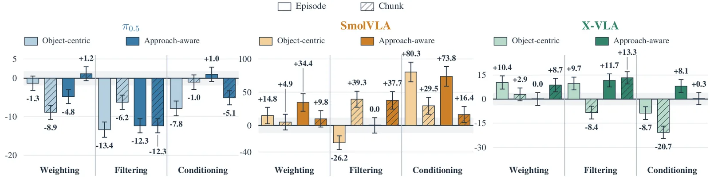
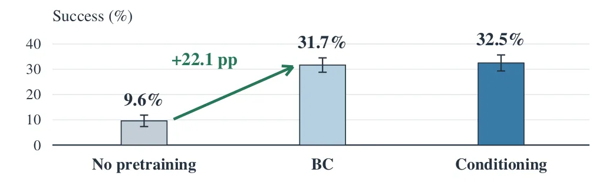

O Problema da Qualidade nas Demonstrações Humanas
Os modelos Vision-Language-Action (VLA) são a nova fronteira para robôs que precisam realizar tarefas complexas baseadas em instruções naturais. A arquitetura padrão para treinar esses sistemas envolve duas etapas distintas: um pré-treinamento massivo em um conjunto diversificado de demonstrações multitarefa, seguido de um fine-tuning (ajuste fino) específico para a tarefa alvo. O objetivo do pré-treinamento é aprender representações gerais de manipulação, enquanto o fine-tuning adapta o modelo ao domínio específico.
No entanto, as demonstrações humanas, mesmo quando coletadas por especialistas, são inerentemente subótimas. Um operador pode hesitar, fazer desvios desnecessários ou mover um objeto de forma ineficiente antes de alcançá-lo. Essas imperfeições geram chunks de ação que contribuem pouco para o progresso em direção ao objetivo. Ignorar essa variabilidade de qualidade pode prejudicar o aprendizado do modelo, fazendo-o imitar comportamentos ineficientes como se fossem ideais.
A comunidade de aprendizado de robótica já estuda o uso de sinais de qualidade para melhorar o treinamento. As três abordagens principais são: ponderação (weighting), onde demonstrações de alta qualidade têm maior peso na função de perda; filtragem (filtering), onde apenas as melhores demonstrações são mantidas; e condicionamento (conditioning), onde o modelo recebe tags explícitas de qualidade como entrada adicional. Apesar de existirem estudos isolados, faltam comparações sistemáticas que controlassem o tamanho dos dados e o orçamento de treinamento para isolar o efeito de cada técnica.

O AXIS-Bench: Um Benchmark Controlado
Para responder a perguntas fundamentais sobre como a qualidade deve ser utilizada, os autores introduzem o AXIS-Bench. Este benchmark é construído sobre o dataset de teleoperação simulada AXIS, contendo 19 mil demonstrações. O diferencial crucial do AXIS-Bench é a disponibilidade de metadados de estado: além das imagens RGB e das ações executadas, o dataset registra os estados dos objetos e os pontos de contato do robô ao longo do tempo.
Esses dados de estado permitem recalcular métricas de qualidade de forma offline e consistente para todas as trajetórias. Isso elimina a subjetividade de avaliações humanas e garante que todas as comparações entre métodos sejam feitas sobre as mesmas trajetórias base. O benchmark suporta 24 tarefas alvo e permite que pesquisadores alinhem o ambiente simulado com seus próprios espaços de trabalho reais, re-renderizando as demonstrações sob novas configurações de câmera e layout.
O estudo foca em três backbones VLA populares: π0.5, SmolVLA e X-VLA. Em cada comparação, os autores mantêm fixos o conjunto de dados de pré-treinamento (5.000 demonstrações) e o orçamento de treinamento. Isso é crítico, pois muitos ganhos aparentes em qualidade podem ser apenas artefatos de usar mais dados ou treinar por mais tempo. O objetivo é medir o ganho marginal de cada estratégia de uso da qualidade, controlando esses fatores de confusão.
Mecanismos: Definindo e Usando a Qualidade
A qualidade no AXIS-Bench é derivada do estado do ambiente, não de recompensas artificiais. Os autores definem duas métricas de progresso baseadas em recompensa (reward) derivada do estado. A primeira é 'object-centric', que mede o progresso geral em relação ao objeto alvo. A segunda é 'approach-aware', que distingue duas fases: a fase de abordagem (aproximação do objeto) e a fase de manipulação (contato e interação). A transição entre essas fases é marcada pelo primeiro contato sustentado do robô com o objeto.
Essas recompensas de estado são agregadas em etiquetas de qualidade em duas granularidades diferentes. Na granularidade de chunk, a qualidade é calculada para pequenos segmentos temporais de ação. Isso permite identificar partes específicas da trajetória que são ineficientes. Na granularidade de episódio, a qualidade resume o desempenho de toda a demonstração de uma vez. A escolha entre chunk e episódio afeta diretamente como o modelo aprende: se foca em correções locais ou em padrões globais.
As estratégias de aprendizado aplicam essas etiquetas de forma distinta. No ponderamento, usa-se uma abordagem estilo AWR (Advantage Weighted Regression), onde o peso da amostra na perda é proporcional à sua qualidade. No filtragem, retêm-se apenas os top 50% das demonstrações mais qualificadas. No condicionamento, as etiquetas de qualidade são injetadas no modelo como tokens adicionais. Isso permite que o modelo aprenda a distinguir implicitamente entre trajetórias boas e ruins, ajustando sua política condicionalmente à tag fornecida.

Resultados: Condicionamento e Granularidade
O primeiro achado robusto é que o condicionamento por episódio com consciência de abordagem (approach-aware) supera a Clonagem Comportamental simples (plain BC) em média across os três modelos avaliados. Aplain BC treina o modelo para imitar as ações humanas sem qualquer sinal de qualidade, tratando todas as demonstrações como igualmente válidas. O condicionamento, ao contrário, permite que o modelo aprenda a diferenciar comportamentos, resultando em uma taxa de sucesso média superior. Isso sugere que ensinar o modelo a reconhecer a qualidade é mais eficaz do que apenas selecionar ou pesar dados.
A granularidade das etiquetas interage complexamente com o método e o backbone. Em média, o condicionamento se beneficia mais de etiquetas de nível de episódio, enquanto o filtragem performa melhor com etiquetas de nível de chunk. Isso faz sentido intuitivo: o filtragem remove demonstrações inteiras ruins, então uma métrica global (episódio) é suficiente. Já o condicionamento, ao processar a sequência completa, pode explorar a estrutura temporal fornecida pelas tags de episódio.
No entanto, essa preferência não é universal. Para alguns backbones específicos, as preferências se invertem. O SmolVLA, por exemplo, mostrou sensibilidade diferente às granularidades em comparação ao π0.5. Isso alerta contra a aplicação cega de receitas prontas. A arquitetura do modelo influencia como ele processa e utiliza informações auxiliares de qualidade. O que funciona para um modelo pode ser neutro ou até prejudicial para outro, dependendo de sua capacidade de representação e inductive biases.
Validação no Mundo Real
Benchmarks puramente simulados podem sofrer de lacunas de realidade (sim-to-real gap). Para validar a utilidade prática do AXIS-Bench, os autores realizaram experimentos no mundo real. Eles utilizaram um braço robótico Franka FR3 e um setup de mesa padrão. O processo envolveu alinhar o espaço de trabalho simulado com o físico, re-renderizar as demonstrações de pré-treinamento para corresponder às novas configurações de câmera e coletar demonstrações reais para o fine-tuning nas tarefas alvo.
Os resultados reais foram significativos. Um modelo π0.5 base, sem pré-treinamento, atingiu uma taxa de sucesso de apenas 9,6% nas tarefas alvo. Após o pré-treinamento no AXIS-Bench usando as melhores estratégias identificadas (condicionamento abordagem-episódio) e subsequentemente fine-tuned com demonstrações reais, a taxa de sucesso saltou para 31,7%. Este aumento de mais de 20 pontos percentuais demonstra que o aprendizado de representações de qualidade em simulação transfere efetivamente para o domínio físico.
A capacidade de re-renderizar trajetórias é crucial para essa validação. Como o AXIS-Bench fornece estados de objetos e contatos replayáveis, é possível gerar novas imagens de observação que correspondem exatamente à perspectiva e iluminação do setup experimental real, sem necessidade de recolher novos dados de demonstração para o pré-treinamento. Isso reduz drasticamente o custo de adaptação para novos ambientes.

Limitações e Escopo
É importante notar que este estudo foca em tarefas de manipulação de mesa (tabletop manipulation) em ambientes estruturados. As dinâmicas de contato e a visibilidade dos objetos são diferentes de tarefas de locomoção ou manipulação em ambientes desordenados. As métricas de qualidade baseadas em estado podem ser mais fáceis de calcular em simulações controladas como MuJoCo do que em dados reais complexos, onde a detecção de contato e estado do objeto é ruidosa.
O estudo também não explora a interação entre qualidade e outros tipos de ruído, como erros de percepção ou falhas de actuação. A qualidade aqui é definida como sub-otimização intencional ou hesitação humana, não como falhas do sistema. Além disso, o uso de condicionamento adiciona complexidade ao pipeline de inferência, exigindo a geração ou seleção de tags de qualidade em tempo real, o que pode não ser trivial em sistemas autônomos sem supervisão.
Outra limitação é a dependência de backbones específicos. Embora três VLAs populares tenham sido testados, a generalização para arquiteturas emergentes ou modelos de escala muito maior permanece em aberto. A descoberta de que as preferências de granularidade variam entre modelos sugere que a otimização da estratégia de qualidade deve ser feita per-modelo, não como uma solução única.
Conclusão e Lições para Desenvolvedores
O paper 'What Matters in Quality-Aware VLA Pretraining' oferece uma lição clara: a qualidade dos dados importa, mas como você a utiliza importa mais. Simplesmente filtrar os piores dados não é a estratégia mais eficaz. Em vez disso, informar o modelo sobre a qualidade através de condicionamento, especialmente quando combinado com uma definição de progresso que distingue abordagem de manipulação, leva a políticas mais robustas.
Para desenvolvedores e cientistas de dados que trabalham com VLA, a mensagem prática é evitar a clonagem comportamental ingênua. Investir na coleta ou cálculo de sinais de qualidade, mesmo que aproximados, pode valer a pena. Se possível, utilize condicionamento em vez de filtragem pura. E esteja ciente de que a granularidade da sua etiqueta de qualidade deve ser ajustada ao seu backbone específico.
O AXIS-Bench fornece a infraestrutura para reproduzir e estender esses resultados. Ao disponibilizar dados reutilizáveis e protocolos padronizados, ele reduz a barreira de entrada para pesquisas em aprendizado de qualidade. Para equipes que buscam melhorar a transferência sim-to-real, a validação real apresentada aqui serve como um caso de uso convincente para investir em pré-treinamento de alta qualidade antes do fine-tuning específico.
O que fica
- Condicionamento por episódio com consciência de abordagem supera a Clonagem Comportamental simples em média.
- A granularidade ideal da etiqueta de qualidade depende do método e do backbone do modelo.
- O AXIS-Bench permite re-renderizar trajetórias para validação real em novos ambientes.
- Pré-treinamento em simulação eleva o sucesso real de 9,6% para 31,7% no fine-tuning.
Paper original: What Matters in Quality-Aware VLA Pretraining: A Benchmark and Empirical Study
Comentários
Nenhum comentário ainda. Seja o primeiro.